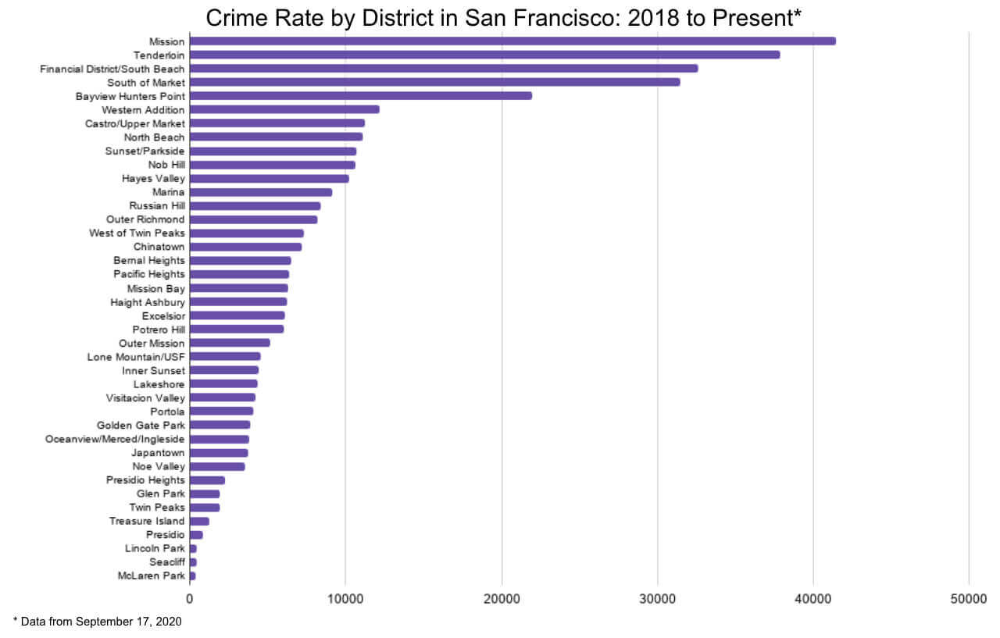

×

Purpose:
This graphic is created to show the crime rate in San Francisco from 2018 to present (data is taken on September 17, 2020) and see, what district is more safe or more dangerous to live.
Source
This image is based on data from the San Francisco Open data Police Department Incident Reports: 2018 to Present you can find here.
Data Visualization Tools
The aggregation of the data from a CSV file was done in Python. The creation on the bar chart was done in Google sheets, imported .png file, then modified with www.kapwing.com.